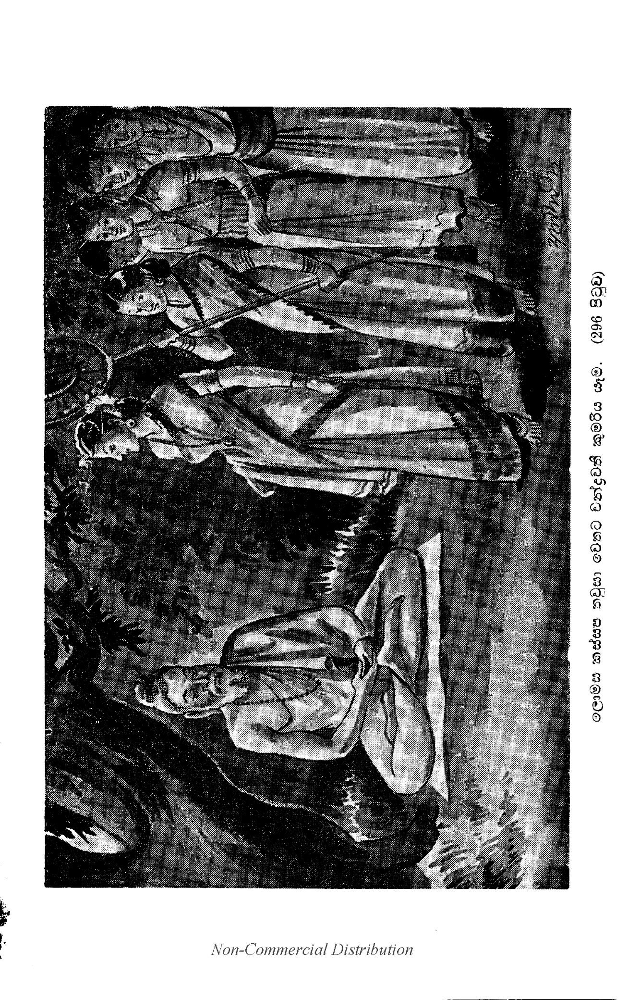

බක්කුලත්ථෙර ප්රශ්නය
(253) “ස්වාමීනි, නාගසෙනයන් වහන්ස, භාග්යවතුන් වහන්සේ විසින් ‘මහණෙනි, මම බාහිත කරණ ලද පාපයන් ඇති බැවින් බ්රාහ්මණ වූ යාචයොගී වූ සදා පවිත්රහස්තයන් ඇති උත්තරීතරයෙකු විරහිත බැවින් අනුත්තර වූ ක්ලෙශරොගයට වෛද්යාචාර්යයකු වැනි වූ ක්ලේශව්යාධියට ශල්යකත්තෘ නම් වෙදෙකු වැනි වූ අන්තිමදෙහධාරී වීමි’ යි කියා මේ කාරණය වදාරණ ලද්දේ ය. නැවත එම භාග්යවතුන් වහන්සේ විසින් ‘මහණෙනි, මාගේ අල්පාබාධික වූ ශ්රාවකභික්ෂූන් අතුරෙන් යම් මේ බක්කුලස්ථවිරතෙම අග්ර ය’ යි කියා මේ එතදග්රපාලිය වදාරණ ලද්දේ ය. ‘භාග්යවතුන් වහන්සේගේ ශ්රී ශරීරයෙහි ද බොහෝ වරෙක ආබාධ උපන්නේ ය’ යි කියා ධර්මයෙහි දක්නා ලැබෙයි. ඉදින් ස්වාමීනි, නාගසෙනයන් වහන්ස, තථාගතයන් වහන්සේ අනුත්තර වූසේක් වූ නම්, එහෙයින් ‘එතදග්ගං භික්ඛවෙ මම සාවකානං භික්ඛූනං අප්පාබාධානං යදිදං බක්කුලො’ යි කියා වදාළ යම් වචනයක් ඇද් ද, ඒ වචනය බොරු වන්නේ ය. ඉදින් බක්කුලමහතෙරුන් වහන්සේ සියලු ම අල්පාබාධ තැනට අග්රසේක් වූ නම්, ඒ කාරණයෙන් ‘අහමස්මි භික්ඛවෙ බ්රාහ්මණො යාචයොගො සදා පයතපාණි අන්තිමදෙහධාරි අනුත්තරො භිසක්කො සල්ලකත්තා’ කියා වදාළ ඒ වචනය හෝ බොරු වන්නේ ය. මේ උභතොකොටිකප්රශ්නය ද නුඹවහන්සේ කරා පැමිණියේ ය. ඒ ප්රශ්නයතෙම නුඹ වහන්සේ විසින් ඉසිලිය යුත්තේ ය” යි කීහ.
“මහරජානෙනි, අප භාග්යවතුන් වහන්සේ විසින් ‘අහමස්මි භික්ඛවෙ බ්රාහ්මණො යාචයොගො සදා පයතපාණි අන්තිමදෙහධාරි අනුත්තරො භිසක්කො සල්ලකත්තා’ යන මේ පාළියත් වදාරණ ලද්දේ ම ය. ‘එතදග්ගං භික්ඛවෙ මම සාවකානං භික්ඛුනං අප්පාබාධානං යදිදං බක්කුලො’ යි කියා මේ එතදග්රපාළියත් වදාරණ ලද්දේ ය. ඒ වදාළ කාරණය වනාහි තමන් වහන්සේ (තුළ) විද්යමාන වුව ද, ඉන් පිටත් වූ ආගමධරී වූ අධිගමධාරි වූ පර්යාප්තිධර වූ ශ්රාවකයන් සඳහා වදාරණ ලද්දේ ය.
“මහරජානෙනි, භාග්යවතුන් වහන්සේගේ ඨානචංකමික වූ ශ්රාවකයන් වහන්සේලා ඇති. ඒ සිටින සක්මන් කරණ භික්ෂූන් වහන්සේලා සිටීමෙන් සක්මන් කිරීමෙන් දිවාරාත්රියෙහි කල් යවා වදාරණසේක්ලා ය. මහරජානෙනි, භාග්යවතුන් වහන්සේ සිටීමෙන් සක්මනින් හිඳීමෙන් සයනය කිරීමෙන් දිවාරාත්රියෙහි කල් යවා වදාරණසේක. මහරජානෙනි, චක්ඛුපාලස්ථවිරාදි වූ යම් ඒ ඨානචංකමික භික්ෂු කෙනෙක් ඇද් ද, ඒ ශ්රාවකයෝ ඒ ගුණගණාංගයෙන් අතිරේක වූහ. මහරජානෙනි, අප භාග්යවතුන් වහන්සේගේ ශාසනයෙහි එකාසනිකාංගය රක්ෂා කරණ භික්ෂූන් වහන්සේලාත් ඇත. ඒ භික්ෂූන් වහන්සේලා දිවිහිමියෙනුත් දෙවෙනි භොජනයක් නො වළඳනසේක්ලා ය. මහරජානෙනි, භාග්යවතුන් වහන්සේ උදය වළඳා දෙවනුවත් කල් දක්වා තුන්වනුවත් ආහාර වළඳා වදාරණසේක. මහරජානෙනි, යම් ඒ එකාසනික භික්ෂූහු කෙනෙක් ඇද් ද, ඒ ශ්රාවකයන් වහන්සේලා ඒ ගුණගණාංගයෙන් වැඩි වූහ. මහරජානෙනි, ඒ ඒ ශ්රාවකයන්ගේ ඒ ඒ කාරණයෝ අනෙකවිධ ය. ඒ කාරණය සඳහා වදාරණ ලද්දේ ය. මහරජානෙනි, අප භාග්යවතුන් වහන්සේ ශීල සමාධි ප්රඥා විමුක්ති විමුක්තිඥානදර්ශන දශබල චතුර්වෛශාරද්යඅෂ්ටාදශබුද්ධධර්ම ෂඩ්අසාධාරණඥානයෙන් අනුත්තර වූ සේක. සර්වඥවිෂය වූ සියලු (254) ධර්මයෙහි ද අග්රප්රාප්ත වූසේක. ඒ අනුත්තරභාවය සඳහා ‘අහමස්මි භික්ඛවෙ බ්රාහ්මණො යාචයොගො සදා පයතපාණි අන්තිමදෙහධාරි අනුත්තරො භිසක්කො සල්ලකත්තා’ කියා වදාරණ ලද්දේ ය. මහරජානෙනි, මේ ලොකයෙහි මනුෂ්යයන් අතුරෙන් එක්කෙනෙක්[1] උත්තම ජාති ඇති වන්නේ ය. එක්කෙනෙක් මහත් ධන සම්පත් ඇති වන්නේ ය. එක්කෙනෙක් විශෙෂවිද්යා ඇති වන්නේ ය. එක්කෙනෙක් නිර්මලශිල්ප ඇති වන්නේ ය. එක්කෙනෙක් අතිදක්ෂවන්නේ ය. එක්කෙනෙක් මහත් වූ ප්රඥාව ඇත්තේ ය. මෙකී සියලු දෙන ම අභිභවනය කොට රජ්ජුරුවෝ ම ඒ සියලු දෙනාහට උතුම් වන්නෝ ය. මහරජානෙනි, එපරිද්දෙන් ම අප භාග්යවතුන් වහන්සේ සනරාමරසකල සත්වයන්ට අග්ර වූසේක. ජ්යෙෂ්ඨ වූසේක. ශ්රෙෂ්ඨ වූසේක. මහරජානෙනි, එපරිද්දෙන් ම යම් කාරණයකින් ආයුෂ්මත් වූ බක්කුලස්ථවිරයන් වහන්සේ අල්පාබාධික වූසේක් ද, ඒ කාරණය අභිනීභාර වශයෙන් සිද්ධ වූයේ ය.

“මහරජානෙනි, ඒ බක්කුල මහතෙරහු මේ මහාභද්රකල්පයට එකාසංඛ්යකල්පලක්ෂයකින් යට ලොකයෙහි බුදු වූ අනොමදස්සි නම් බුදුන් දවස වෙදත්රයෙහි කෙළ පැමිණි බ්රාහ්මණයෙක් ව සියලු සැපත් හැර සෘෂිප්රව්රජ්යාවෙන් පැවිදි ව පඤ්චඅභිඥා අෂ්ටසමාපත්ති උපදවා වසමින් අනොමදස්සි බුදුන්ගෙන් බණ අසා සරණ සිල් පිහිටා ධ්යාන සැපතින් කල් යවනුයේ ඒ අනොමදස්සි බුදුන්ට උපන්නා වූ උදරාබාධයට නානාප්රකාර බෙහෙත් සම්පාදනය කොට ආබාධය ගුණ කරවා බුදුන් වැඳ වැතිර ‘ස්වාමීනි, ඔබ වහන්සේට කළා වූ මේ භෛෂජ්යක්රියා පුණ්යානුභාවයෙන් මා උපනුපන් ජාතියෙහි කිරිපීරක් දෝන කලු දු මට ශරීරව්යාධියක් නො වේව’ යි කියා ප්රාර්ථනා කෙරෙමින් ඒ ආත්මභාවයෙන් චුත ව බ්රහ්මලොකයෙහි ඉපිද එකාසංඛ්යකල්පයක් මුළුල්ලෙහි දිව්යමනුෂ්ය (ලොක) දෙක්හි සැරිසරමින් පදුමුත්තර නම් බුදුන් සමයෙහි හංසවතී නම් නුවර ඉපිද වැඩිවිය පැමිණ දිනෙක පදුමුත්තර නම් බුදුන් විසින් සිවුවණක් පිරිස් මැද එක් භික්ෂුනමකට ‘අල්පාබාධික භික්ෂූන්ට මේ තෙම අග්රය’ යි කියා අග්රඨානාන්තර දෙන කල්හි අතිප්රසන්න ව ‘මම ද අනාගතයෙහි මෙසේ ම බුදුකෙනෙකුන්ගේ ශාසනයෙහි අල්පාබාධිකඨානාන්තරය ලබමි’ යි ප්රාර්ථනා කොට දානශීලාදී බොහෝ කුසල් රැස් කෙරෙමින් දෙව්ලොව ඉපිද දිව්යසම්පත් වළඳමින් සසර සැරිසරා විපස්සි බුදුන් උපදනාට පෙරටු ව දෙව්ලොවින් අවුත් බන්ධුමතී නුවර බ්රාහ්මණකුලයෙහි ඉපද වැඩි විය පැමිණ සසර කලකිරී සියලු ම සැපත් හැර සෘෂිප්රව්රජ්යාවෙන් පැවිදි ව ධ්යාන උපදවා හිමාලයෙහි වාසය කෙරෙමින් විපස්සි බුදුන් බුදු ව බණ වදාරණ කල හිමාලයෙන් අවුත් බණ අසා පැහැද තිසරණ පිහිටා තමන් පැමිණි ධ්යානගුණය හැරපිය නො හැකි ව කලින් කලට බුදුන් කරා එන්නේ ය. එකල විපස්සි බුදුන් හා අග්රාශ්රාවක යුගය හැර අටසැටලක්ෂයක් පමණ භික්ෂූන් වහන්සේට හිමාලයයෙහි විෂවෘක්ෂයන්ගේ මල් පිපී විෂමිශ්ර ව ආ වාතස්පර්ශයෙන් තෘණ පුෂ්පක නම් රොගයක් උපන්නේ ය. (255) ඒ දැක තපස්වීන් වහන්සේ තමන්ගේ ආනුභාවයෙන් නානාවිධ වූ බෙහෙත් රැස් කොට යොදා භික්ෂූන් වහන්සේලාට වෛද්යක්රියා කෙළේ ය. ඒ ක්ෂණයෙහි ම සියලු ම භික්ෂූන් වහන්සේලා නීරොග වූහ.
“තපස්වීන් වහන්සේත් එයින් චුත ව බ්රහ්මලොකයෙහි ඉපද එකානුකපක් මුළුල්ලෙහි දිව්යමනුෂ්යසම්පත් වළඳා කාශ්යප නම් බුදුන් දවස බරණැස් නුවර ඉපද වැඩිවිය පැමිණ ඝරාවාසයෙන් යුක්ත ව වාසය කෙරෙමින් තමන්ගේ පුරාණ ගෙය ජීර්ණ ව ගිය හෙයින් ‘නවගෘහයක් කෙරෙමි’ යි සිතා නොයෙක් වඩුවන් හා බොහෝ දෙනෙකුන් පිරිවරා ගෙණ දැවදඩු පිණිස ප්රත්යන්තගමකට යනුයේ අතුරුමග ජීර්ණ ව දිරා ගිය මහාවිහාරයක් දැක ‘අහෝ! මාගේ ගෘහකර්මාන්තය තිබේවා. මේ ආර්ය්යයන් වහන්සේලාගේ විහාරය කරවා දෙමින් අනුගාමික වූ කුසල් රැස් කෙරෙමි’ යි සිතා වනාන්තරයෙන් බොහෝ දාරුසම්භාරයන් ගෙන්වා ඒ ජීර්ණවිහාරය ඉවත් කොට මහපොහෝ ගෙයක් කෙළේ ය. භොජනශාලාවක් හා ගිනිහල්ගෙයක් කෙළේ ය. නොයෙක් විසිතුරු ගෘහපන්තියක් හා සක්මන්මළුවක් කෙළේ ය. ගම්භීර වූ වැසිකිළියක් කෙළේ ය. නොයෙක් කප්පියභාණ්ඩ හා අනෙකවිධ වූ බෙහෙත්බඩු සම්පාදනය කොට තබා මහාසංඝයාවහන්සේට සංඝාරාමය පූජා කෙරෙමින් දිවිහිමියෙන් කුසල් රැස් කොට දිව්යලොකයෙහි ඉපද එක් බුද්ධාන්තරයක් මුළුල්ලෙහි දිව්යමනුෂ්යශ්රී සම්පත් අනුභව කෙරෙමින් අප බුදුන් වහන්සේ කොසඹෑනුවර සිටු කුලයෙක උපන්හ.
“ඔහු උපන් දවස් පටන් ඒ සිටුකුලය ලාභාග්ර යශොග්ර ප්රාප්ත විය. මවුකුසින් බිහි වූ පුත්රයා දැක මෑනියෝත් ‘මා පුතනුවෝ මහපින් ඇති කෙනෙක. යම් තාක් කල් නීරොග ව දීර්ඝායුෂ්ක ව වෙසෙත් නම්, ඒ තාක් කල් අපට මහසැපත් සිද්ධ කෙරෙති’ යි සිතා උපන් දවස් ම මහායමුනා නම් ගඟින් නැහැ වූ කුමාරයෝ දීර්ඝයුෂ්ක වෙති’ යි යනු අසා නහවනු පිණිස මහපෙරහරින් යැවූහ. කිරිමෑනියන් විසින් කුමාරයා මහගඟ ගලගලා නහවන කල්හි ‘ගොදුරකැ’ යි සිතා මහාමත්ස්යයෙක් දිව අවුත් ගිලපීහ. කුමාරයාගේ පුණ්යානුභාවයෙන් කිසි දුකක් හෝ අන්තරායක් නො වී ය. ස්වර්ණමැදුරකට වන් කල මෙන් විය. කුමාරයාගේ තෙජොනුභාවයෙන් මත්ස්යතෙම රත් වූ හීවැලක් ගිලපු කලක් මෙන් ලය දවා ගෙණ මහත් වෙගයෙන් තිස්යොදුනක් ගෙවා ගොස් බරණැස්නුවර කෙවුළන්ගේ දැලෙක වැටී මලේ ය. කෙවුළෝ මහමසු දැක උගුලා කදින් ගෙණ යමින් දුටු දුටුවන්ට ‘කහවණු දසයකට දෙම්හ’ යි කියකියා වීථියෙහි ඇවිදිමින් අසූකොටියක් ධන ඇති දරුවන් නැති සිටුගෙයකට දී කහවණුවක් ගෙණ ගියාහ. ඒ ගෙය සිටු භාර්යාවෝ ද එදවස් මසු දැක ලඟට අවුත් ශස්ත්රයෙන් මසු පිට සෙමෙන් මස් කෙරෙමින් මසුබඩ හුන් ස්වර්ණවර්ණකුමාරයන් දැක ප්රීතියෙන් පිණා ‘මම ස්වර්ණවර්ණ වූ පුතනු කෙනෙකුන් ලද්දෙමි’ යි මහත් කොට හඬ ගසා කුමාරයා වඩා ගෙණ සිටානන් ලඟට ගියාහ. සිටානෝ ද මහත් වූ ප්රීතියට පැමිණ නුවර බෙර හසුරුවා මහපෙරහරින් ගෙණ ගොස් බරණැස්රජුහට දැක්වූහ. බරණැස්රජ ද ප්රසන්න ව ‘මහසිටානෙනි, මොහු මහපිණැති කෙනෙක. මහපෙරහරින් පොෂ්ය කරව’ යි නියොග කෙළේ ය.
“එකල කොසඹෑ (256) නුවර සිටුභාර්යාවෝ ‘බරණැස් නුවර අපුත්රකසිටුභාර්යා කෙනෙක් මසෙකු බඩින් රන්වන් පුතනු කෙනෙකුන් ලද්දෝ’ යි යනු අසා මහසෙනඟ සමගින් වහා ගොස් පුත්රයානන් දැක හැඳින ‘මාගේ පුත්රයා ය, මාගේ පුත්රයා ය’ යි ඔවුනොවුන් විවාද වඩා ගෙණ දෙගොල්ල ම රජ්ජුරුවන් කරා ගොස් පැමිණියාහු ය. රජ්ජුරුවන් වහන්සේ ද ඔවුන්ගේ විවාදය තත් වූ පරිද්දෙන් විනිශ්චය කොට ‘මෑ තම දසමාසයක් ම උසුලා ගෙණ වැදූ හෙයින් අමාතෘ කරන්ටත් නඩු නැත්තේ ය. එහෙයින් දෙසිටු ගෙවල ධනසම්පත්තියට මොහු දායාදපුත්ර වූහ. ‘මුරයෙන් මුරය මොහු පොෂ්ය කළ මැනැවැ’ යි කියා භාර දුන්හ.[2] එකල දෙනුවර සිටුවරු දෙදෙන ම ප්රසන්න ව මහත් වූ ප්රෙමයෙන් පොෂ්යය කෙරෙති. කුමාරයාගේ ද පුණ්යානුභාවයෙන් ඒ සිටුවරුන් දෙදෙනාගේ යසලාභ සම්පත් වැඩෙන්නේ ය. ‘ඔහු සිටුකුලයන් දෙදෙනෙකුන්ගේ පොෂ්යයෙන් වැඩුනු හෙයින් බක්කුලකුමාරයා ය’ යි කියා දඹදිව්තලෙහි ප්රසිද්ධ වූහ. ඒ බක්කුලකුමාර යන තන්හි ‘ද්වෙ කුලානි අස්සාති ද්වක්කුලො’ යි කියා යුතු තැන අන්යාර්ථ සමාසවිෂයෙහි ‘බා චත්තාළීසාදො’ යන සූත්රයෙන් ද්විශබ්දයහට බකාරාදෙශ කොට ‘බක්කුල කුමාර ය’ යි කියා ව්යාකරණකර්තෘහු අර්ථ කියති. ඒ කුමාරතෙම වැඩි විය පැමිණි කල්හි ඕහට දෙනුවර සප්තභූමකප්රාසාද තුණ තුණ බැවින් සයක් වෙති. එහි දෙවඟනන් වැනි නරඟනෝ දිව්යමය සුවපහස් ගෙණ නිති පතා රැක හිඳිති. ඒ නාටකස්ත්රීන් පිරිවරා එකෙක නුවර සාරමසක් සාරමසක් බැගින් සම්පත් අනුභව කරන්නේ ය. නුවරින් නුවර යන මාර්ගය ද මහාමහී නම් මහගඟ පිටින් මහනැවපිට විසිතුරු මණ්ඩපයෙන් දෙවඟනන් වැනි නරඟනන් සමගින් මහාසම්පත් විඳිමින් සාර මසකින් එක් නුවරකට යන්නේ ය. ඒ නුවර වාසීහු මහනැව්පිටින් දෙමාසයක් පෙරමගට ගොස් මහපෙරහරින් වඩා යෙති. මෙසේ මහත් වූ ඓශ්වර්ය ශ්රී සම්පත් අනුභව කරන්නා වූ බක්කුලමහසිටානන්ට අසූ හවුරුද්දෙක් අතික්රාන්ත වී ය. එවකට අප භාග්යවත් වූ බුදුරජානන් වහන්සේ ලොවුතුරා බුද්ධරාජ්යයට පැමිණ ලෝවැඩ පිණිස දනවු සැරිසරා වඩනාසේක් කොසඹෑනුවරට වැඩ වදාළසේක.
“එකල බක්කුලමහසිටානෝ ද ගඳදුම්මල්පහන් ගත් අත් ඇති ව බුදුන් කරා ගොස් බණ අසා පැහැද සියලු සැපත් හැර මහණ ව සිවුපිළිසිඹියාපත් රහත් වූසේක. එකල්හි දු බක්කුල මහතෙරුන් වහන්සේගේ දෙනුවර පුරාණ දුතියිකාවරු අඩමස අඩමස බැගින් මාහැඟි වූ චීවරාදි සිවුපසයෙන් උපස්ථාන කළාහු ය. ඒ බක්කුල මහතෙරුන් වහන්සේට අසූහවුරුද්දක් මුළුල්ලෙහි ගිහිගෙයි වසන කලත් අසූහවුරුද්දක් මහණ ව වසන කලත් දෑඟිල්ලෙන් සුවඳපිඩක් ගෙන ඉඹපියන මාත්ර කාලයකු දු කිසි ආබාධයෙක් නම් නො වී ය. මෙසේ අල්පාබාධ වීමට නිසි වූ මහත් කුසල් කළ බැවින් නීරොගබවට පැමිණිසේක. එහෙයින් අප භාග්යවතුන් වහන්සේ විසින් ‘එතදග්ගං භික්ඛවෙ මම සාවකානං භික්ඛුනං අප්පාබාධානං යදිදං බක්කුලො’ කියා මේ අර්ථය වදාරණ ලද්දේ ය.
“මහරජානෙනි, භාග්යවතුන් වහන්සේට ව්යාධියත් උපදනා කල්හි ද නො උපදනා කල්හි ද ධුතාංගසමාදාන වශයෙන් ග්රහණය කරණ කල්හි ද (257) නො කරණ කල්හි ද භාග්යවතුන් වහන්සේ හා සදෘශ වූ කිසි සත්ව කෙනෙක් සමස්තලොකයෙහි ම නැත්තේ ය. මහරජානෙනි, මෙම කාරණය ත්රෛලොක්යස්වාමි වූ දෙවාතිදෙව වූ අප භාග්යවතුන් වහන්සේ විසින් සංයුත්තනිකායවරලාඤ්ඡනයෙහි ද වදාරණ ලද්දේ ය. හේ මෙසේ යි:- ‘යාවතා භික්ඛවෙ සත්තා අපදා වා දිපදා වා’ යනාදීන් ‘මහණෙනි අපද වූ හෝ දිපද වූ හෝ චතුෂ්පද වූ හෝ බහුප්පද වූ හෝ රූපී වූ හෝ අරූපී වූ හෝ සඤ්ඤී වූ හෝ අසඤ්ඤී වූ හෝ නෙවසඤ්ඤීනාසඤ්ඤී වූ හෝ යම් පමණ සත්වකෙනෙක් ඇද් ද, ඒ සකල සත්වයන්ට ම තථාගතත්වාදිගුණයෙන් යුක්ත වූ අර්හත්සම්යක් සම්බුද්ධ සර්වඥයන් වහන්සේ අග්ර ය යි කියනු ලැබෙයි’ යන මේ ශ්රී මුඛපාලිය ගෙණ හැර දක්වා වදාළ සේක. එකල්හි රජ්ජුරුවෝ “සාධු, සාධු, ස්වාමීනි, නාගසෙනයන් වහන්ස, මේ ප්රශ්නය එපරිද්දෙන් ම පිළිගන්නෙමි” යි කීහ.
බක්කුලත්ථෙරප්රශ්නය නිමි.